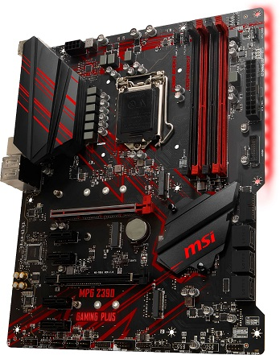
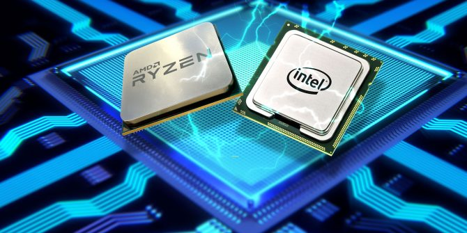
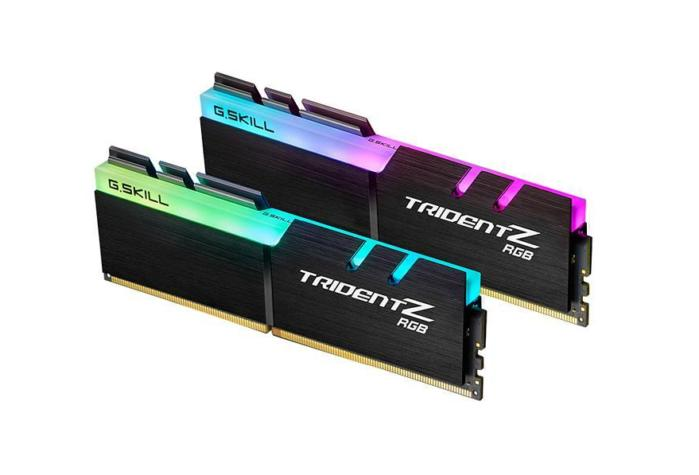
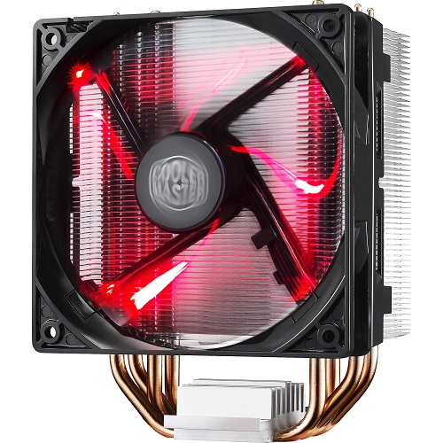
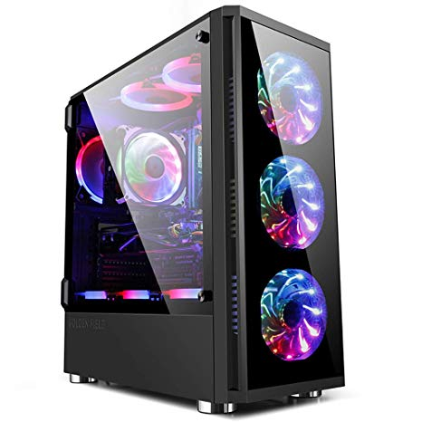
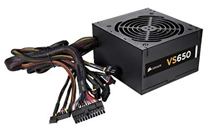
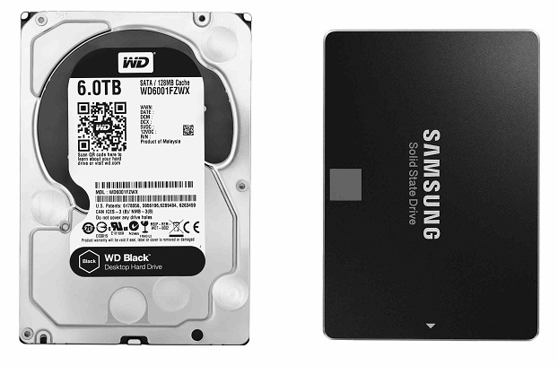
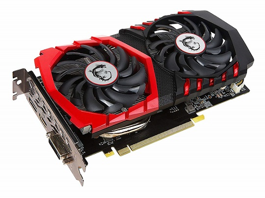

Step 1: Motherboard

Everything in your computer connects to the motherboard in some way. Make sure you don't place it above any hard surfaces as you may damage it. Also make sure it's on some static proof surface, as static can also damage components!
Step 2: CPU

After having laid out your motherboard, very carefully place the CPU into the CPU socket on the motherboard. The CPU socket is rectangular. CPU placement varies from motherboard to motherboard, so please do not hesitate to referece the motherboard!
Step 3: Memory

Depending on your motherboard, you may have either 2 or 4 ram slots on consumer grade motherboards, or even more for enthusiast and server grade motherboards, regardless of which one you have, RAM Memory slots are usually located next to the CPU socket. Insert the memory into the memory slots. Make sure you align them correctly and you insert them in the correct order. After that, proceed to push each memory stick down until you hear 2 clicks!
Step 4: CPU Fan

Each CPU Fan is different, however a unique characteristic they have is their heatspreader already have thermal paste applied on them. The CPU Fan heatspreader has to go directly above the already inserted CPU and it has to not create any air bubbles inbetween. After that the CPU Fan will have a lock mechanism in place. Simply lock the Fan down and proceed to the next step!
Step 5: Case

Simply Lay out your case with both side panels off. Then proceed to the next step!
Step 6: Motherboard Mounting & Power Supply

After you lay out your case, align the motherboard to the small screw holes in the case and screw the motherboard in the case to mount it. You Can move your motherboard and hover over the case by carefully holding it by the CPU Fan. After that, place your Power Supply in the correct spot in your case (refer to the manual) and then mount it to the case, and plug in all the necessary cables from the Power Supply into the motherboard, such as the CPU 4-8 Pin and the Motherboard 22+2 Pin Connectors!
Step 7: Storage

The storage of the computer will hold all your data in it. Computer storage comes in two variants, SSDs and Hard Drives. SSDs are more stable and less likely to break, while also being faster than hard drives, however, in contrast, hard drives do carry way more storage than SSDs and the price per GB of storage is much lower. Simply mount the SSD or Hard Drive into the Case, and reference the manual for details. After mounting the storage drive(s), simply connect the hard drive to the motherboard using a SATA Cable and power it using one of the Power Supply's SATA Power Connectors!
Step 8: Video Card

This is the final piece of the build. Insert the Graphics Card into one of the Motherboard's PCIE Slots (If your motherboard has multiple, use the one that is the closest to the CPU Socket for better bandwidth), and then slide it in until you hear a small click, and then screw the Video Card in place to properly mount it to the Case! Then proceed to connect one of the Power Supply's PCIE power connectors into the Video Card (The type of PCIE power connector you use heavily depends on your Video Card)
Step 9: First Boot & Operating System
Finally, after everything is done, Set up your peripherals, power on your brand new computer and boot it for the first time. You may have noticed you were redirected to the computer's BIOS. It is suggested you properly shut down your computer at that point. You have to decide on which operating system you are going to use. Windows and Linux are your only real practical options when building a desktop. Linux gives more customizability and security while microsoft is more standard with most programs. Linux also has plenty of different versions called Distributions, all of which are made for different uses. After deciding on your operating system, simply load the burned ISO into a flashdrive, plug it in, and install your operating system. After that simply install all the necessary updates and your computer is ready to use!